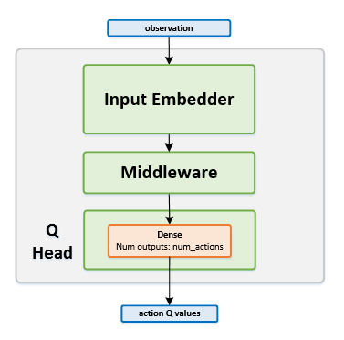

Persistent Advantage Learning
Actions space: Discrete
References: Increasing the Action Gap: New Operators for Reinforcement Learning
Network Structure

Algorithm Description
Training the network
-
Sample a batch of transitions from the replay buffer.
-
Start by calculating the initial target values in the same manner as they are calculated in DDQN
- The action gap should then be subtracted from each of the calculated targets. To calculate the action gap, run the target network using the current states and get the values for all the actions. Then estimate as the maximum predicted value for the current state:
- For advantage learning (AL), reduce the action gap weighted by a predefined parameter from the targets :
- For persistent advantage learning (PAL), the target network is also used in order to calculate the action gap for the next state: where is chosen by running the next states through the online network and choosing the action that has the highest predicted value. Finally, the targets will be defined as -
-
Train the online network using the current states as inputs, and with the aforementioned targets.
-
Once in every few thousand steps, copy the weights from the online network to the target network.